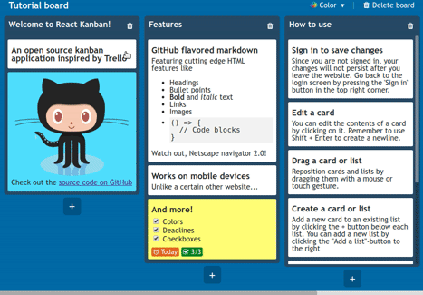

Basics¶
The Kanban board gives you an excellent overview of your current work situation. Visualizing work in a team environment simplifies communication and leads to improved productivity.
The app allows you to monitor the progress and make edits on the go, no matter where you are. Online Kanban boards help you increase your team productivity by workflow visualization, task assignments and real-time team collaboration.
It has most of the features available on Trello, like creating and editing new cards, dragging around cards and so on.
With columns and swimlanes you can organize work in the most effective way. Wherever you are, you can keep track your work and keep your team mates updated. Changes your team is making are immediately visible to you, and your team mates to ensure you all stay on top of the progress.
Purpose of this document¶
The purpose of this document is to give tchnical information about React KANBAN applicaiton and implementation
Intended audience¶
The intended audience are:
Future developers to extend or use some ideas of this project
Kanban team members
Supervisors, to analyze the design and implementation of Kanban project
Scope¶
This document wil describe the design and some technical issues of Kanban Project
Key Kanban tool features¶

Quickly create, edit, move and assign tasks to your team members on the go
Collaborate with team members anytime, anywhere, with real-time sync on all of your favorite devices
Tap once to open a task
Swipe to move a task to the next column
Slide to go to the next column
Add comments, attachments and notifications
Set color-coded priority levels, change card types and make checklist
Easily enable time tracking by moving a task to the Working type column
{kind=link}